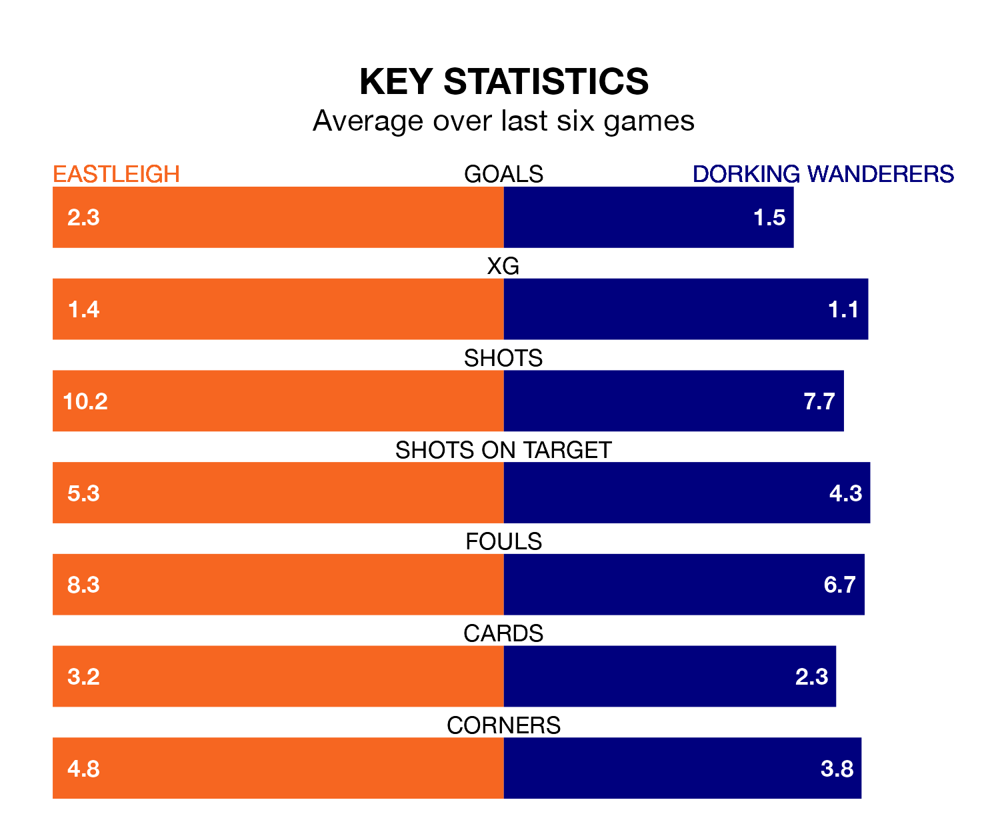

Dorking Wanderers travel to Eastleigh on Saturday in National League.
The visitors come into the game on the back of a defeat in their last match, having lost to Woking 2-1 at home, with a goal from James McShane.
The Spitfires, meanwhile, won their last match, 5-3 against Aldershot Town, with their goals scored by Paul Leon Miller McCallum, Scott Quigley, Chris Maguire and Bailey Clements.
In McCallum, Eastleigh have the league's most on-form striker so far this season. He has notched 18 goals in 18 appearances.
His goal rate of one every 86 minutes is quicker than that of Jason Prior, Dorking's top scorer with a goal every 163 minutes, and a total of eight goals in 17 games.
With 27 goals in 22 games so far this season, Wanderers are scoring at below the league average rate with 1.2 goals per game. And they are conceding more than average, letting in 39 goals at a rate of 1.8 per game.
The Spitfires, meanwhile, are above average scorers, with 1.7 goals per game, compared to a league average of 1.5. They have also conceded 1.7 goals per game.
The away side are 19th in the table after 22 games, of which they have won seven and drawn four, earning 25 points.
The hosts are seven places ahead of Dorking in 12th, with nine wins and six draws putting them on 33 points.
Eastleigh are in mixed form in National League, with three wins and a draw from their last six games.
With two wins and a draw over that period, Dorking's form is worse – they have taken seven points from 18, compared to Eastleigh's 10.
Updated: 15:16, 21/12/23